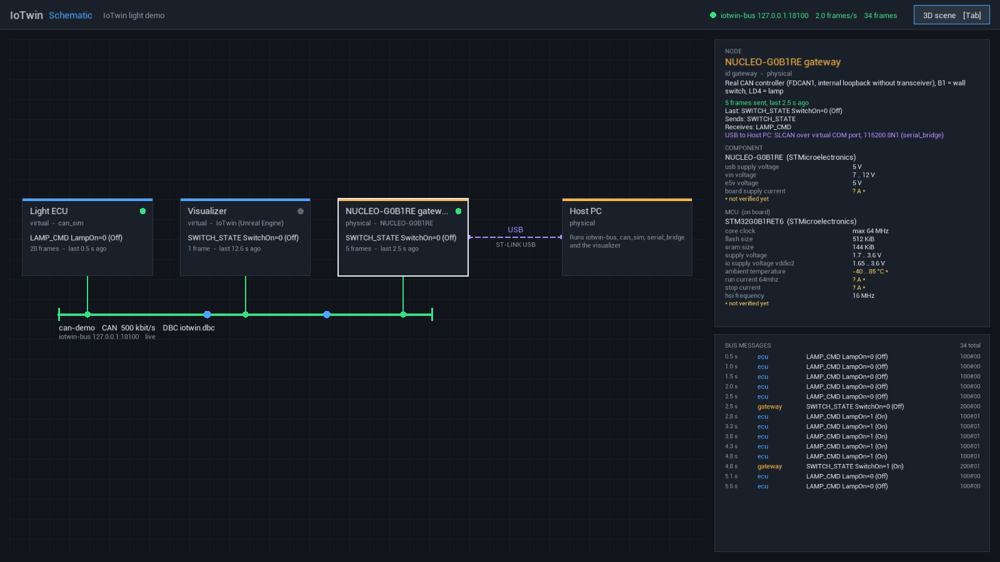

Visualizer (Unreal Engine)¶
The Unreal project lives in visualizer (UE 5.6, C++ module IoTwin).
Bus integration (Source/IoTwin/Bus)¶
| Class | Role |
|---|---|
FCanFrame |
CAN frame struct + text codec (same format as the C core) |
FIoTwinBusConnection |
worker thread: TCP connection, auto-reconnect, line framing |
UIoTwinBusSubsystem |
game-instance subsystem: SendFrame, OnFrameReceived, OnConnectionChanged, last value per id |
UCanSignalComponent |
maps one bit of a frame to a bool (Receive or Transmit) |
Connection settings (Config/DefaultGame.ini):
[/Script/IoTwin.IoTwinBusSubsystem]
Host=127.0.0.1
Port=8080
bEnabled=True
Command line overrides: -IoTwinBusHost=<host>, -IoTwinBusPort=<port>,
-IoTwinBusDisabled.
Binding a signal in Blueprint¶
Add a Can Signal component to any actor, set Direction, Can Id (hex,
e.g. 100), Byte Index and Bit Index.
- Receive: bind to On Value Changed or read Get Value.
- Transmit: call Set Value; the frame is sent on change, after a reconnect, and optionally every Transmit Cycle Seconds.
For full frames use the subsystem directly (Get IoTwin Bus Subsystem → Send Frame / On Frame Received).
Schematic view (Source/IoTwin/Schematic)¶
TAB (or the button in the HUD) switches between the 3D scene and a 2D schematic of the system:
- nodes from the system description (
data/systems/*.json), the CAN bus with its members, other links (USB) as dashed lines; - every frame is decoded with the DBC of the bus and shown at the node that sent it, with a dot travelling over the bus to the consumers;
- status per node (green < 3 s, yellow < 10 s since its last frame), frame rate, message log;
- click a node for details: description, messages it sends/receives, links and the characteristics from the component database (unverified values are marked).
| Class | Role |
|---|---|
FSystemDescription |
loads a system JSON (nodes, buses, links, messages) |
FCanDatabase |
DBC reader for the visualizer (messages, signals, value tables, Intel/Motorola) |
FComponentCatalog |
reads data/components/**/*.json, formats values (1.7 .. 3.6 V, 64 MHz) |
UIoTwinSchematicSubsystem |
model: loads the data, follows OnFrameReceived / OnFrameSent, attributes frames to nodes, view switch |
FSchematicRenderer |
draws the view on the HUD canvas (layout designed for 900 px, scaled) |
Which node sent a frame: frames sent by this game belong to SelfNode
(visualizer); for received frames the first producer of the message in the
system description other than SelfNode is used (iotwin-bus does not echo
frames back to their sender).
[/Script/IoTwin.IoTwinSchematicSubsystem]
SystemFile=data/systems/light-demo.json
SelfNode=visualizer
SystemFile is searched relative to the launch directory, the repository
root (visualizer/..) and the package root. Command line:
-IoTwinSystem=<file>, -IoTwinView=Schematic (start in the schematic),
-IoTwinSelectNode=<node id> (preselect a node, e.g. for screenshots).

Electrical model (Source/IoTwin/Systems)¶
UElectricalPortComponent: wiring is a symmetric list of ports stored on both ends (saved with the level).HasPower()searches the wiring graph for a supplying port; cycles are handled.APowerSourceActor: supply with an output relay. With Controlled By Can the relay follows itsRelayControlsignal (default0x100byte 0 bit 0).AElectricalCableActor: two conducting ends, drawn withCableComponent;ConnectBetween(A, B)positions and wires it.ALampActor: port →UElectricalDeviceComponent→ULightEmitterComponentand a bulb that changes colour.AWallSwitchActor: clickable switch that transmits its position (0x200).
Older assets that only stored ConnectedPort are migrated automatically when
the component is registered.
Demo scene¶
AGM_Simulation (the default game mode) builds the light demo at runtime from
engine basic shapes, so it works in any map and needs no extra assets. To build
your own scene, create a Blueprint subclass of GM_Simulation, untick
Spawn Demo Scene (the relay and switch ids are configurable there as well)
and select it as GameMode Override in the map's World Settings.
Tests and smoke runs¶
# Automation tests (CAN codec, DBC, system description, component database)
UnrealEditor-Cmd.exe visualizer/IoTwin.uproject -ExecCmds="Automation RunTests IoTwin;Quit" -unattended -nullrhi
# Unattended game run: screenshot after 10 s, quit after 15 s
UnrealEditor.exe visualizer/IoTwin.uproject -game -IoTwinScreenshot=10 -IoTwinQuitAfter=15
# Same in the schematic view with the gateway selected
UnrealEditor.exe visualizer/IoTwin.uproject -game -IoTwinView=Schematic -IoTwinSelectNode=gateway -IoTwinScreenshot=10 -IoTwinQuitAfter=15
The screenshot is written to Saved/Screenshots/IoTwinDemo.png.